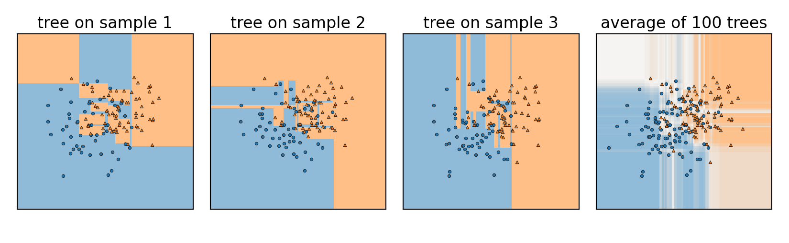
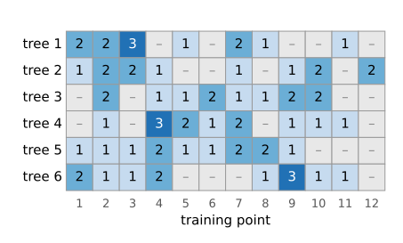
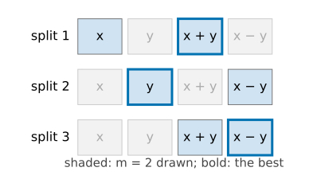
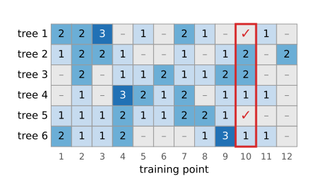
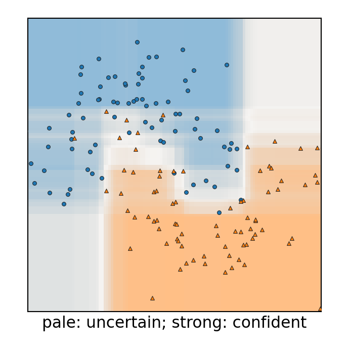
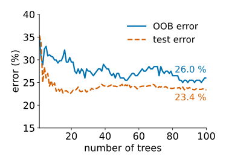

Last unit: one deep tree fits its training data perfectly but is unstable: change a few points and the whole tree changes. Today we turn that into a strength (Breiman, 1996 and 2001).
Grow many trees, each on a bootstrap sample, and let them vote: bagging.
Averaging helps only as far as the trees make different mistakes.
Random forest: each split looks at a random subset of the features, so the trees differ more.
Out-of-bag error: a validation estimate for free.
Vote fractions as probabilities, and where they mislead.
Slides titled The math give the formulas and proofs; the ideas are complete without them.
A tree grown fully follows every training point: on average it is in the right place (low bias), but it moves a lot with the particular sample of data (high variance).
Measurements have the same problem, and the same cure: average several of them.
But we have only one training set. How do we get many trees?

Three deep trees on three bootstrap samples (next slide) of the same data, and the average of 100 of them.
The bootstrap
Draw n points from the n training points with replacement.
Some points are drawn twice or three times, about a third are not drawn at all.
Each draw is a new, slightly different training set from the same data.
Bagging (bootstrap aggregating): grow one tree per bootstrap sample, let all trees vote.

Six bootstrap samples of 12 points: how often each point was drawn; – = left out (24 of 72 cells).
The math: one in three is left out
The chance that one particular point is not chosen in one draw is 1 - \tfrac1n; the n draws are independent: P(\text{point not in the sample}) = \left(1 - \frac1n\right)^n \xrightarrow{n \to \infty} e^{-1} \approx 0.368 .n = 5: 0.328; n = 20: 0.358; n = 1000: 0.368. The expected number of distinct points in a bootstrap sample is n\,(1 - (1 - 1/n)^n) \approx 0.632\, n.
Try it: bootstrap samples
Averaging helps only if the trees differ
Average B predictions, each with the same spread.
If they are independent, the spread of the average shrinks without limit as B grows.
If they are correlated (they make similar mistakes), it shrinks only down to a floor set by the correlation.
Bagged trees on the same data are alike: the strongest feature is chosen at the root of almost every tree.
The math: the variance of an average
B predictors f_1, \dots, f_B, each with variance \sigma^2, every pair with correlation \rho: \operatorname{Var}\Big(\frac1B\sum_b f_b\Big) = \frac{1}{B^2}\Big(\sum_b \operatorname{Var} f_b + \sum_{b \ne c}\operatorname{Cov}(f_b, f_c)\Big) = \frac{B\sigma^2 + B(B-1)\rho\sigma^2}{B^2} = \rho\sigma^2 + \frac{1-\rho}{B}\,\sigma^2 .
B \to \infty leaves \rho\sigma^2: more trees cannot beat the correlation.
\sigma^2 = 1, \rho = 0.3: 1, 0.370, 0.307 for B = 1, 10, 100; floor 0.3.
To lower the floor, lower \rho, even at some cost in each tree’s own accuracy.
Squared error = bias² + variance + noise. Averaging leaves the bias unchanged and lowers only the variance.
Try it: averaging correlated predictors
Random forests: decorrelate the trees
At each split, look only at a random subset of m features (out of d) and choose the best split among those.
A typical choice: m \approx \sqrt d for classification.
The strongest feature is not always available, so other features get their turn: the trees become less alike, and their average better.
Everything else as in bagging: bootstrap samples, deep trees, vote.
m = d is plain bagging; m = 1 makes every split’s feature a coin toss.

Try it: a forest in the plane
Out-of-bag (OOB) error
Each training point was left out by about a third of the trees.
Let only those trees vote on it: that is a prediction for a point they never saw.
The error rate of these votes is the out-of-bag error: a validation estimate for free, without setting data aside.
It assumes the training points are independent. Pixels in a painted stroke are not: the pixel-classification unit shows how OOB then fools you.

Point 10 was left out by two of the six trees (✓): only they vote on it.
Probabilities from votes
70 of 100 trees say “nucleus”: P(\text{nucleus}) \approx 0.7. (Each tree votes with its leaf’s class shares; fully grown leaves are pure, so this is a vote count.)
The probability map: confident inside the classes, uncertain near the boundary. Useful for deciding where to look or where to label more.
Caveat: far from all training data, every tree extends its outermost rectangles, so the forest can be confident where it has never seen anything. A vote fraction is not a calibrated certainty.

The settings
Number of trees B: more never hurts accuracy, only time. The OOB error curve flattens; stop there.
Depth / leaf size: forests usually grow deep trees; averaging takes care of the variance.
m: the one that matters most, but often fine at the default.
No feature scaling, little tuning: a reason forests are a common first choice for tables of measurements and for pixel classification.

Bagging vs boosting
bagging / random forest
boosting
trees
deep, grown independently
shallow (often stumps), grown in sequence
each new tree
sees a bootstrap sample
focuses on the points the previous trees got wrong
combination
plain average / vote
weighted sum
reduces
variance
bias
Boosting is the subject of the integral-images day (AdaBoost and the face-detector cascade).
The math: a forest as adaptive neighbours
The forest’s class probability at \mathbf x is the average of the trees’ leaf shares, \hat p_k(\mathbf x) = \frac1B\sum_{b=1}^B \hat p_{k,b}(\mathbf x) . Each leaf share is an average over the training points in the leaf of \mathbf x. So \hat p_k(\mathbf x) is a weighted vote of training points, with weight high for points that often share a leaf with \mathbf x: a nearest-neighbour rule whose notion of “near” is learned from the labels (it ignores features that never help to split).
Summary
Bootstrap: n draws with replacement; about 1/e \approx 37\,\% of the points are left out of each sample.
Bagging: many deep trees on bootstrap samples, averaged: less variance, same bias.
Averaging B correlated predictors: variance \rho\sigma^2 + (1-\rho)\sigma^2/B; the correlation sets the floor.
Random forest: a random subset of m features at each split lowers the correlation.
OOB error for free; vote fractions as probabilities, but confident far from the data.
Boosting is the sequential, bias-reducing relative.